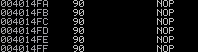

NOPs
No OPeration instruction(NOP)
NOP is an assembly language instruction that does nothing. When the program encounters a NOP, it will simply skip to the next instruction. In Intel x86 CPUs, NOP instructions are represented with the hexadecimal value 0x90
NOP-sled
in Buffer Overflows
NOP-sled is a technique used during the exploitation process of Buffer Overflows. Its only purpose is to fill a large (or small) portion of the stack with NOPs; this will allow us to slide down to the instruction we want to execute, which is usually put after the NOP-sled. The reason is because Buffer Overflows have to match a specific size and location that the program is expecting.
